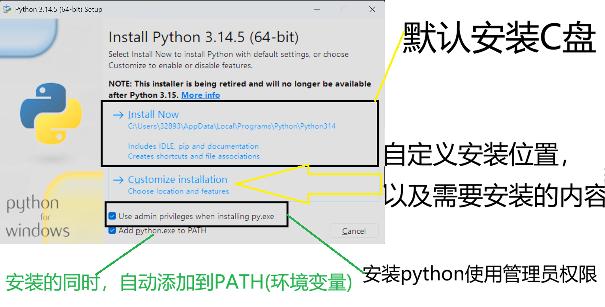

环境准备——python安装
安装python解释器
- 解释器：将用户代码，翻译成，计算机能识别的二进制形式
-
安装过程
- 注意：安装的时候，最好 安装的同时，自动配置环境变量，避免后续，自行添加，增加工作量
-

- 请确保：安装路径没有中文或空格
-
当安装了多个python版本，可以使用命令(
windows+R————→cmd)：py --list：查看安装的所有python版本py -*：[*]是：需要使用的python版本，该方法，用于执行运行python版本py --version：查找默认的python安装版本。sys.version：返回值是当前运行文件的解释器版本，前提是需要import sys导入sys模块